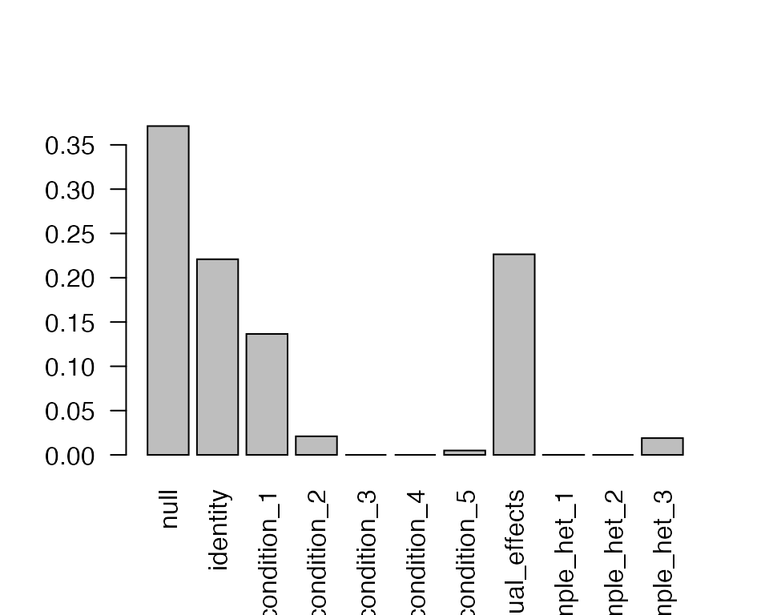
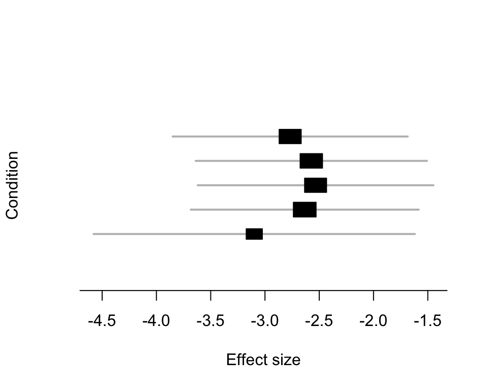

This vignette introduces the mashr software for someone who is familiar with the basic idea in Urbut et al., which we strongly recommend reading before proceeding.
In this first vignette we use only the “canonical” covariance matries to simplify presentation. However, an important aspect of mashr is the use of data-driven covariance matrices that are learned from the data, so when you are done here you should look at the data-driven vignette and the non-canonical matrix vignette. If you think you may have correlations in your data measurements then also look at how to incorporate correlations.
This package implements the “multivariate adaptive shrinkage” (mash) method from Urbut et al..
Mash is a method for dealing with large numbers of tests in many (e.g. dozens) different conditions. Here “conditions” can mean many different things: it could be different tissues (as in Urbut et al), or different time points, or different treatments, or even different phenotypes (think of testing multiple phenotypes at many genetic variants in a GWAS).
There are essentially four steps to a mash analysis
Here we go through an example that illustrates each of these steps in turn. In this example we use the same (simulated) data at each step. In complex practical applications – especially very large applications – one might want to use different subsets of the data at different steps. For example, one might only want to extract posterior summaries (step 4) for a subset of the tests. We will deal with such complications in later vignettes. For now, we note the one crucial rule:
The Crucial Rule: Step 3 (fitting the mash model) must be performed with either all the tests you performed, or – if that causes computational challenges – a large random subset of tests.
In particular, you must not use only a set of selected “significant” or “strong” tests in step 3. This is because mash uses step 3 to learn about the null signal in the data, as well as the non-null signal. In particular, in settings where most tests are null or nearly-null, this is the point where mash learns this, and consequently “shrinks” (“corrects”) the posterior estimates towards 0. (Effectively this step is analogous to a “multiple testing correction” step.)
First we simulate some data for illustration.
library(ashr) library(mashr) set.seed(1) simdata = simple_sims(500,5,1)
This simulation routine creates a dataset with 5 conditions, and four different types of effect: null, independent among conditions, condition-specific in condition 1, and shared (equal effects in all conditions). It creates 500 effects of each type for a total of 2000 effects.
To run mash you need data consisting of a matrix of effects (Bhat) and a matrix of standard errors (Shat), for \(J\) effects (rows) in \(R\) conditions (columns).
[If you have only access to \(Z\) scores, you can set Bhat to the Z scores, and set Shat to be the matrix with all 1s].
The simulation above created both these matrices for us (in simdata$Bhat and simdata$Shat). To get these ready for applying mash you must first use mash_set_data to create a data object with those two pieces of information:
data = mash_set_data(simdata$Bhat, simdata$Shat)
There are two types of covariance matrix you can use in mash: “canonical” and “data-driven”. The canonical ones are very easy to set up and so we use those here for illustration. However, in applications you will likely also want to use data-driven matrices, and this is an important feature of mash. See the data-driven vignette for more details on how to do this.
The function to set up canonical covariance matries is cov_canonical. The following sets up canonical covariances in U.c (we used .c to indicate canonical), which is a named list of matrices.
U.c = cov_canonical(data) print(names(U.c))
# [1] "identity" "condition_1" "condition_2" "condition_3"
# [5] "condition_4" "condition_5" "equal_effects" "simple_het_1"
# [9] "simple_het_2" "simple_het_3"Having set up the data and covariance matrices you are ready to fit the model using the mash function:
m.c = mash(data, U.c)
# - Computing 2000 x 151 likelihood matrix.
# - Likelihood calculations took 0.06 seconds.
# - Fitting model with 151 mixture components.
# - Model fitting took 0.51 seconds.
# - Computing posterior matrices.
# - Computation allocated took 0.02 seconds.This can take a little time. What this does is to fit a mixture model to the data, estimating the mixture proportions. Specifically the model is that the true effects follow a mixture of multivariate normal distributions: \(B \sim \sum_k \sum_l \pi_{kl} N(0, \omega_l U_k)\) where the \(\omega_l\) are scaling factors set by the “grid” parameter in mash and the \(U_k\) are the covariance matrices (here specified by U.c).
Remember the Crucial Rule! This step must be peformed using all the tests (or a large random subset), because this is where mash learns that many tests are null and corrects for it.
You can extract estimates (posterior means and posterior standard deviations) and measures of significance (local false sign rates) using functions like get_pm (posterior mean), get_psd (posteriore standard deviation) and get_lfsr (local false sign rate):
# condition_1 condition_2 condition_3 condition_4 condition_5
# effect_1 0.7561458 0.7705832 0.8052784 0.8111106 0.8189440
# effect_2 0.7245445 0.6905870 0.7760427 0.6922674 0.7012652
# effect_3 0.7387335 0.7514386 0.8104767 0.8390446 0.8501583
# effect_4 0.7855681 0.8454469 0.8360452 0.8660075 0.8503394
# effect_5 0.8044530 0.8371033 0.8808419 0.8785889 0.8758291
# effect_6 0.7206973 0.6833578 0.7894008 0.7002639 0.7569357# condition_1 condition_2 condition_3 condition_4 condition_5
# effect_1 0.07387923 -0.12489893 -0.076326658 0.092636092 -0.045368333
# effect_2 -0.02353733 -0.17604905 -0.032434944 -0.201656877 -0.170553662
# effect_3 -0.10218377 0.18092247 -0.084636159 0.022525110 -0.002684964
# effect_4 -0.06238616 0.02794226 0.065449986 0.008113548 0.032179641
# effect_5 0.03341405 -0.06059793 0.000147215 -0.003887728 -0.004665912
# effect_6 -0.09934820 0.21556825 -0.079152999 0.213031189 0.079063550# condition_1 condition_2 condition_3 condition_4 condition_5
# effect_1 0.4592858 0.4210500 0.3544674 0.4062428 0.3365922
# effect_2 0.4861870 0.4277966 0.4047004 0.4447896 0.4149876
# effect_3 0.4679453 0.5082149 0.3799463 0.3269399 0.3283911
# effect_4 0.4389151 0.2964005 0.3082095 0.2749191 0.2809671
# effect_5 0.4033381 0.3286543 0.2608065 0.2597960 0.2656089
# effect_6 0.5226691 0.4981609 0.4482801 0.4906789 0.3899258Each of these are \(J \times R\) matrices.
Use get_significant_results to find the indices of effects that are “significant”, which here means they have lfsr less than t in at least one condition, where t is a threshold you specify (default 0.05). The output is ordered from most significant to least significant.
head(get_significant_results(m.c))
# effect_1800 effect_1812 effect_1857 effect_1953 effect_1915 effect_1950
# 1800 1812 1857 1953 1915 1950print(length(get_significant_results(m.c)))
# [1] 150You can also get the significant results in just a subset of conditions. For example
print(head(get_significant_results(m.c, conditions=1)))
# effect_1812 effect_1726 effect_1800 effect_1501 effect_1953 effect_1993
# 1812 1726 1800 1501 1953 1993Use get_loglik to find the log-likelihood of the fit (this will only be useful when you have other fits to compare it with!)
print(get_loglik(m.c))
# [1] -16120.32Use get_estimated_pi to extract the estimates of the mixture proportions for different types of covariance matrix:
print(get_estimated_pi(m.c))
# null identity condition_1 condition_2 condition_3
# 3.711960e-01 2.208688e-01 1.365259e-01 2.097881e-02 0.000000e+00
# condition_4 condition_5 equal_effects simple_het_1 simple_het_2
# 0.000000e+00 4.959635e-03 2.264404e-01 8.763027e-05 0.000000e+00
# simple_het_3
# 1.894289e-02barplot(get_estimated_pi(m.c),las = 2)

Here we can see most of the mass is on the null, identity, singletons_1 (which corresponds to effects that are specific to condition 1) and equal_effects. This reassuringly matches the way that these data were generated.
The following produces a meta-plot based on the posterior means and posterior variances of an effect. Here we look at the most significant result.
mash_plot_meta(m.c,get_significant_results(m.c)[1])

print(sessionInfo())
# R version 3.6.3 (2020-02-29)
# Platform: x86_64-pc-linux-gnu (64-bit)
# Running under: Linux Mint 20
#
# Matrix products: default
# BLAS: /usr/lib/x86_64-linux-gnu/atlas/libblas.so.3.10.3
# LAPACK: /usr/lib/x86_64-linux-gnu/atlas/liblapack.so.3.10.3
#
# locale:
# [1] LC_CTYPE=en_US.UTF-8 LC_NUMERIC=C
# [3] LC_TIME=en_US.UTF-8 LC_COLLATE=en_US.UTF-8
# [5] LC_MONETARY=en_US.UTF-8 LC_MESSAGES=en_US.UTF-8
# [7] LC_PAPER=en_US.UTF-8 LC_NAME=C
# [9] LC_ADDRESS=C LC_TELEPHONE=C
# [11] LC_MEASUREMENT=en_US.UTF-8 LC_IDENTIFICATION=C
#
# attached base packages:
# [1] stats graphics grDevices utils datasets methods base
#
# other attached packages:
# [1] mashr_0.2.38 ashr_2.2-50
#
# loaded via a namespace (and not attached):
# [1] Rcpp_1.0.4.6 knitr_1.28 magrittr_1.5 MASS_7.3-51.5
# [5] SQUAREM_2020.2 lattice_0.20-40 R6_2.4.1 rlang_0.4.6
# [9] plyr_1.8.6 stringr_1.4.0 tools_3.6.3 grid_3.6.3
# [13] xfun_0.13 rmeta_3.0 irlba_2.3.3 invgamma_1.1
# [17] htmltools_0.4.0 abind_1.4-5 yaml_2.2.1 assertthat_0.2.1
# [21] digest_0.6.25 rprojroot_1.3-2 pkgdown_1.5.1 crayon_1.3.4
# [25] mixsqp_0.3-43 Matrix_1.2-18 fs_1.3.2 memoise_1.1.0
# [29] evaluate_0.14 rmarkdown_2.1 stringi_1.4.6 compiler_3.6.3
# [33] desc_1.2.0 backports_1.1.5 mvtnorm_1.1-1 truncnorm_1.0-8